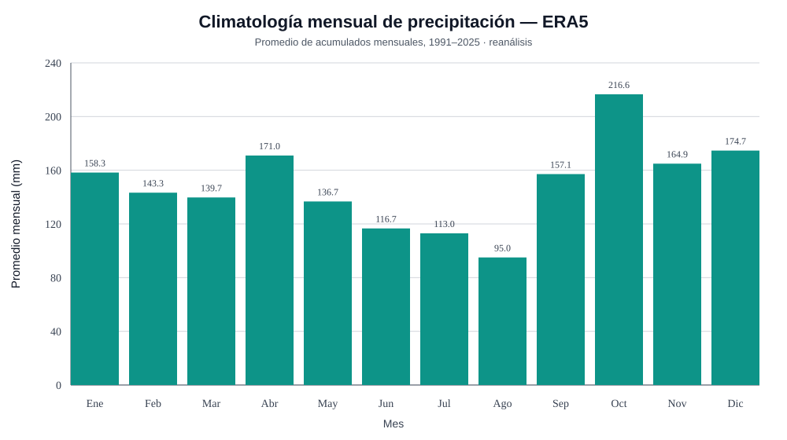

01 · Precipitación y territorio
Una mirada histórica, sin confundir fuentes.
La investigación reúne referencias académicas y documentales de Virasoro y una serie ERA5 para la celda próxima a la ciudad, entre 1991 y 2025.
Leer investigación ↗
Investigación sobre precipitaciones, referencias históricas y datos territoriales para comprender cómo varían las lluvias entre lugares y períodos.
Referencias locales publicadas y una serie ERA5 de varias décadas, presentadas según su escala y procedencia.
La investigación reúne referencias académicas y documentales de Virasoro y una serie ERA5 para la celda próxima a la ciudad, entre 1991 y 2025.
Leer investigación ↗Valores calculados para una celda de reanálisis, no para un pluviómetro urbano.
Serie de 35 años y registros históricos publicados de distintas procedencias.
Consultar ↗32 años completos de datos mensuales del Ministerio de Producción de Corrientes.
Ver resultados ↗Consolidado de referencia para explorar cobertura y disponibilidad regional.
Ver cobertura ↗
Promedio mensual de acumulados · ERA5 · 1991–2025.
Consultá gráficos, registros departamentales y el catálogo de estaciones INTA-SIGA.
Abrir explorador ↗Una estación, un agregado departamental y un reanálisis no representan lo mismo.
Archivos derivados, scripts y metadatos documentan los análisis.
Las conclusiones respetan el alcance de cada conjunto.